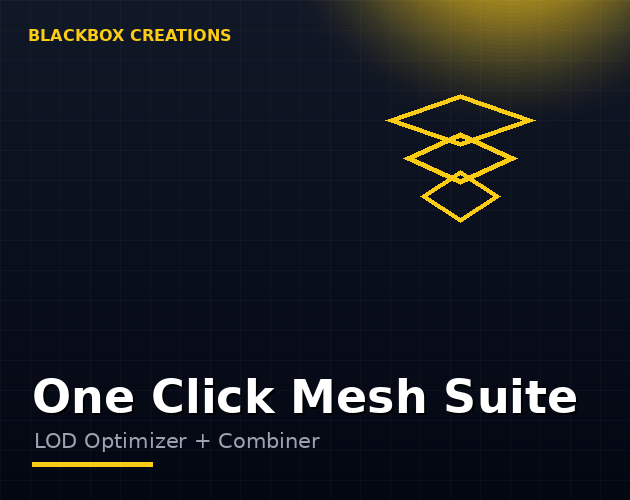

Tools / One Click Mesh Suite
A complete mesh optimizer for Unity: generate LODs, optimize geometry and combine meshes in a single workflow that takes models from raw to ship-ready.
Instant download & priority support
One-time purchase · Instant download · Free minor updates
Buy nowAlso on the Unity Asset Store

Mesh optimization is a pipeline, not a single operation: simplify, generate LODs, combine. Doing it across three separate tools means three workflows and three chances for something to get lost. The Suite runs the whole pipeline in one place.
Studios and serious solo developers shipping 3D games on mobile, VR or any performance-sensitive platform — anyone who optimizes meshes more than once a month will save the price in a week.
Mesh optimization is a pipeline, not a button. A raw imported model typically needs three passes: simplify the heavy geometry, generate LOD levels for distance, and combine the static pieces to kill draw calls. Run those across three separate tools and you get three workflows, three learning curves, and three chances for an export to go sideways between steps. The Suite runs the whole pipeline in one place — one window, one workflow, one purchase.
The Suite bundles the full capabilities of three tools: mesh simplification that cuts triangle counts while preserving shape, batch LOD generation wired to Unity's LODGroup, and mesh combining with texture atlas baking to collapse draw calls. Each is the real, complete capability — not a watered-down teaser — integrated so the output of one step feeds cleanly into the next.
The individual tools — Mesh Simplifier, Batch LOD Generator, MeshWeld Pro Lite — cover each step separately and are the right call if you only ever need one of them. The Suite is for developers who run the full pipeline regularly: one purchase instead of three, one workflow instead of three, and no friction between steps. If you optimize meshes more than once a month, the integrated workflow pays for itself in the first week.
A practical pass looks like this. First, simplify: run the heaviest imports through the simplifier with a preview check, targeting background props hardest. Second, generate LODs for the model library in one batch so every prop has distance-appropriate versions. Third, combine: merge the static environment pieces and bake their materials into atlases. Fourth, profile — Unity's frame debugger before and after tells you exactly what the pipeline bought you. The whole loop fits in an afternoon; the manual equivalent is a week.
Honest buyer's advice: if you only ever combine meshes and never touch LODs, buy MeshWeld Pro Lite. If your whole problem is dense marketplace imports, the Mesh Simplifier alone is the fix. The Suite earns its place when optimization is a recurring activity — importing new art weekly, supporting multiple platforms with different budgets, or maintaining a growing asset library. One purchase covering the full pipeline beats three separate purchases only if you actually run the full pipeline; otherwise the single tool is the smarter buy.
The Suite combines LOD generation, optimization and combining in one integrated workflow. The individual tools (Mesh Simplifier, Batch LOD Generator, MeshWeld Pro Lite) cover each step separately at a lower price point.
If you regularly do all three steps, the integrated workflow and single purchase save both time and money versus buying separately.
If you regularly run the full pipeline, yes — the value is the integrated workflow, not just the feature list. If you only ever need the one tool you own, stick with it.
Yes. The Suite is an Editor workflow: optimize during development, ship the optimized result. No runtime code, no scene restructuring.
It contains their full capabilities in one integrated package. The standalone tools remain available separately for developers who only need one step.